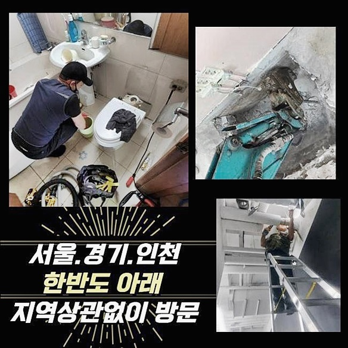
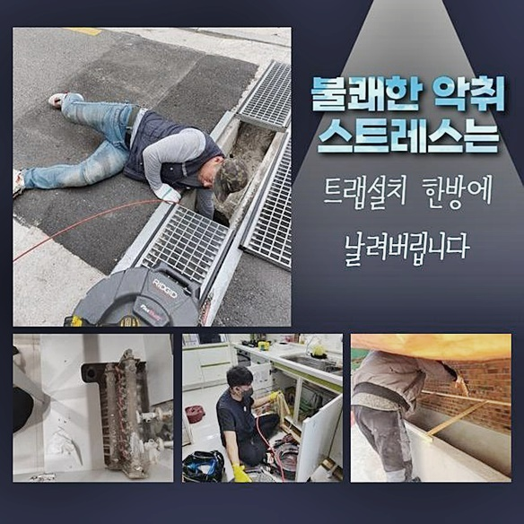
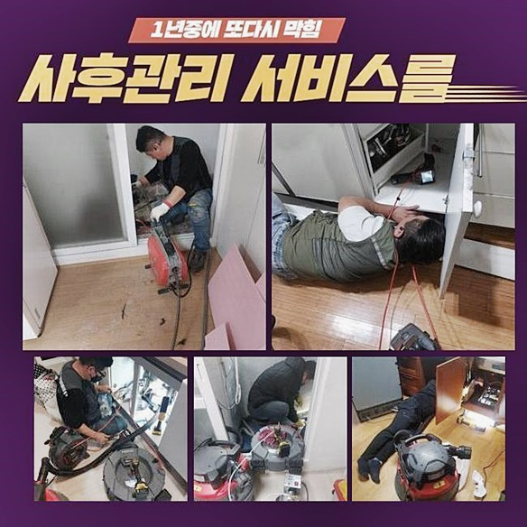
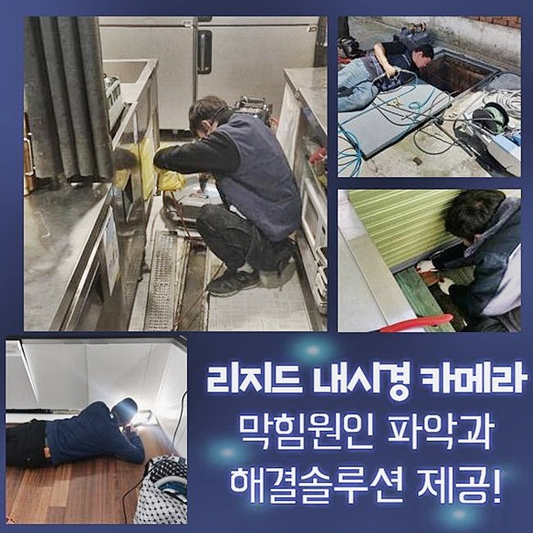
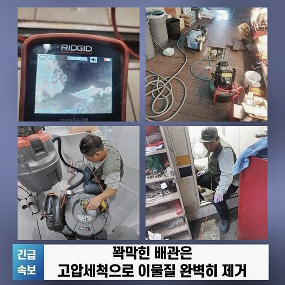
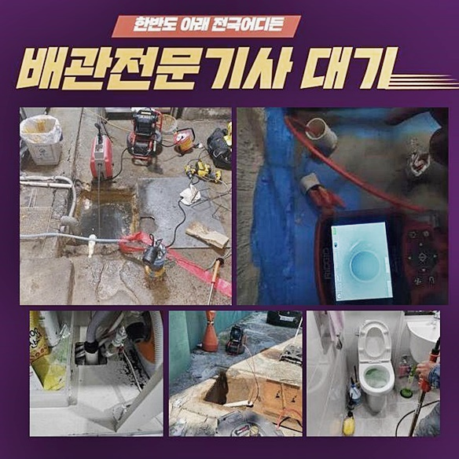

🏠 종로 와룡동하수구뚫음 연지동 하수구뚫어주는곳 통수전문
용인시 처인구 배관막힘 전문 시공 후기

📋 작업 개요
- 위치: 용인시 처인구, 수원시 영통구, 화성시 동탄
- 서비스 유형: 배관막힘, 고압세척, 내시경점검
- 작업 일시:
- 업체명: 하수구수사대 (010-5615-2118)
🔍 문제 상황
종로 와룡동하수구뚫음 연지동 하수구뚫어주는곳 통수전문
거주지 등에서 자가수리등에 관한 정보들이 즐비해 곳곳에 시멘트들을 바른다거나 화장실에 부족한 눈금쪽에 검수를 셀프로 수행하시는 고객님들이 많아졌어요
위와같이 금액부분을 절약하게되면 좋겠지만 간혹가다 변수들로 오류들이 발생될 수 있죠
시멘트와 같은 물질이 협소한 배수관으로 흐르면 문제를 생기게하는데 해당 폐기물등은 수도와 접촉하면 양생됨에 따라 배수길을 막아버려요
이러한 상황에서도 저희로 말씀드리면 안정적으로 시정해드리고 있으니 어떠한 문제상황에서도 편히 불러주세요
말씀드릴 장소는 화장실쪽에서 발발한 막힘으로 하단에 위치한 하수도로 오수들이 고일것만 같다며 수습을 요청하시는 의뢰하셨습니다
작업에 필요한 기기를 준비하여 고객님댁에 내방드리고 배수구를 관찰하니 겉에도 석회들이 가득함과 동시에 돌과 같이 굳어버린걸 확인했습니다
의뢰인은 최근들어 바닥 시공을 자가적으로 해보았는데 이후에 하수관이 알게모르게 정체된다고 설명해주셨어요

🔎 원인 분석
💡 전문가 진단: 정밀 진단 장비를 사용하여 슬러지의 고착 여부를 판명하고 타격/세척 작업을 실시했습니다.
구간별로 자리한 이물들을 수직안쪽으로 알게모르게 흘려보냈는데 진단 결과 입구에까지 잔해물들이 쌓이게된 까닭이 시멘트로 보였어요
이로 인해 배관이 협소한 탓에 빠지지를 못하고 역류되는 증상도 보여 빠른 해결책이 요구되었습니다
내부에 전형적인 문제라면 어렵지않게 석션장비로 대처가 가능하고 심한 슬러지등의 증상일때 샤프트세척을 이행합니다
이번 해당 장소에서는 석회뭉치를 화학품으로 녹여주어 세척을 이해하는것이 좋으므로 첫번째로 이물량을 순서대로 주시하고 뒤이어 15분정도 대기했어요
배수장애의 비용과 관련해 궁금해해주시는 고객님들이 많이 보이지만 진단 결과에 따라 계획과 방법이 달라지기에 점검들을 거쳐서 설명드리고 있어요
만일 딱딱하게 흡착되었을 경우 무분별하게 기기들을 투입한다면 장비들까지 손상될 확률이 높아지고 가끔은 압박을 넣어 잔해를 제거하려다가 배수관이 균열되는 경우들이 가끔 보입니다
수도가 너무 안빠져 업체를 통해 전화하기에 앞서 용도에 맞지 않는 공구들로 무리하게 시도하다 배수구가 깨져서 의뢰를 하시기도 합니다
해당 방법은 막힌 배수구를 해결하실 때 교체 등의 비용까지 지불해야해서 어렵지않게 풀어갈 수 있음에도 오히려 검수를 어렵게만듭니다
저희의 전문가는 해당 과정이 원활할 수 있게 유화제를 적절히 쓰고 전문적인 기기가 있어서 개별배수관에 피해가 없게끔 안정적으로 실시실시이행합니다

🔧 작업 과정
중화제들을 부어주고 약간의 대기시간을 가지고 수도를 부어주면 유화를 거치며 단단함이 풀어집니다
연결부에 흡착되어 돌과 같이 강도가 쎄진 석회였으나 유화제로 녹인뒤 석션장치로 흡입하였더니 잔해까지도 큰 어려움없이 제거된 모습이였습니다
이처럼 흡입기로도 흡입을 실시하면 샤프트기를 이용한 샤프트장치의 이용을 큰 어려움없이 진행하는게 가능합니다
장비를 넣어서 꺾인 위치의 슬러지를 청소하고 확인 차 하수관을 확인해보았습니다
1순위로 내시경 카메라를 배수관으로 삽입하여 배수길을 점검하여 어느지점을 집중해서 작업들을 이어갈지 보이는 것 말고도 문제요소는 있지않은지 세심히 원인들을 파악했죠
내시경의 경우 저희의 전문가가 메인 배수관으로 흘러가는 중심에까지 투입되며 엘보라인에서도 길을 따라 넣을 수 있는 까닭에 원활히 작업들을 이행합니다
입구와 배관 간 연결부위까지 이물질이 고착된 상황으로 샤프트장치로 연결부분부터 작업을 이행해보았죠
저희업체가 애용하는 샤프트의 경우 노커들이 배관 내부에서 회전하며 안에 달라붙은 잔해를 안정적으로 세척해주기에 관로가 고착물로 막혀버렸을 때 꼭 있어야하는 녀석이죠
조각으로 나뉘어져 있거나 석션으로 제거되는 이물들만 있는 경우는 없기에 하수관에서 돌과 같이 굳어버려 연결부에 자리해있어서 물리적으로 타격하는 과정이 있어야합니다
이물을 제거할 때도 내시경장치를 넣어서 꼼꼼히 이물제거를 실시했죠
슬러지와 잔해도 말끔히 제거하고 내시경장비로 검수를 진행하니 벽면까지 청결해졌고 기름슬러지나 잔해물들도 없어졌답니다
입구에도 있었던 잔해물은 빠르게 깨끗히 청소되어 고객님께서는 부담없이 물을 사용하기에 이르렀어요
그리고 통수확인을 해보기위해서 수돗물을 일시에 붓고 하수라인으로 흐르게하여 배수과정과 청소가 원활히 이행된건지 확인했습니다


✅ 작업 완료
솟아오르거나 하단부에서 새어버리는 증상들도 없었으며 내시경장비로 하수구를 보았더니 시원히 배출되었죠
재발되는 일이 없게 관리적인 측면이 큰 영향을 미친다는것을 기억해주세요
의뢰인분이 혼자서 올바른 수도사용을 유지하도록 관리법들도 설명드린 후 작업들을 끝마쳤어요
금액에 대한 궁금증도 상담할 때 안내하니 저희를 찾아주세요



⚠️ 하수구 배관 막힘 예방 및 관리 가이드
- ✅ 머리카락, 비닐, 물티슈 등 물에 분해되지 않는 이물질은 절대 흘려보내지 마세요.
- ✅ 기름기 많은 식기는 설거지 전 키친타올로 먼저 기름때를 닦아내세요.
- ✅ 주기적으로 배수구에 뜨거운 물을 가득 부어주어 유지방 고착을 방지하세요.
- ✅ 작업 후 1년 이내 재발 시 무상 A/S 보증 서비스를 제공합니다.
💡 핵심 정리
- 확실한 장비 작업(내시경 점검 및 샤프트 스케일링)으로 원인을 뿌리 뽑습니다.
- 작업 후 1년 이내에 동일한 부위 재발 시 100% 무상 A/S 서비스를 보장합니다.
- 서울 · 경기 · 인천 전 지역에 24시간 언제든 긴급 출동할 수 있도록 항시 대기 중입니다.
❓ 자주 묻는 질문 (FAQ)
🚨 용인시 처인구 배관막힘 문제로 고민이신가요?
정확한 원인 진단과 확실한 시공으로 재발 없는 해결을 약속드립니다.
24시간 긴급 출동 | 서울 · 경기 · 인천 전지역 | 1년 내 재발 시 무상 A/S